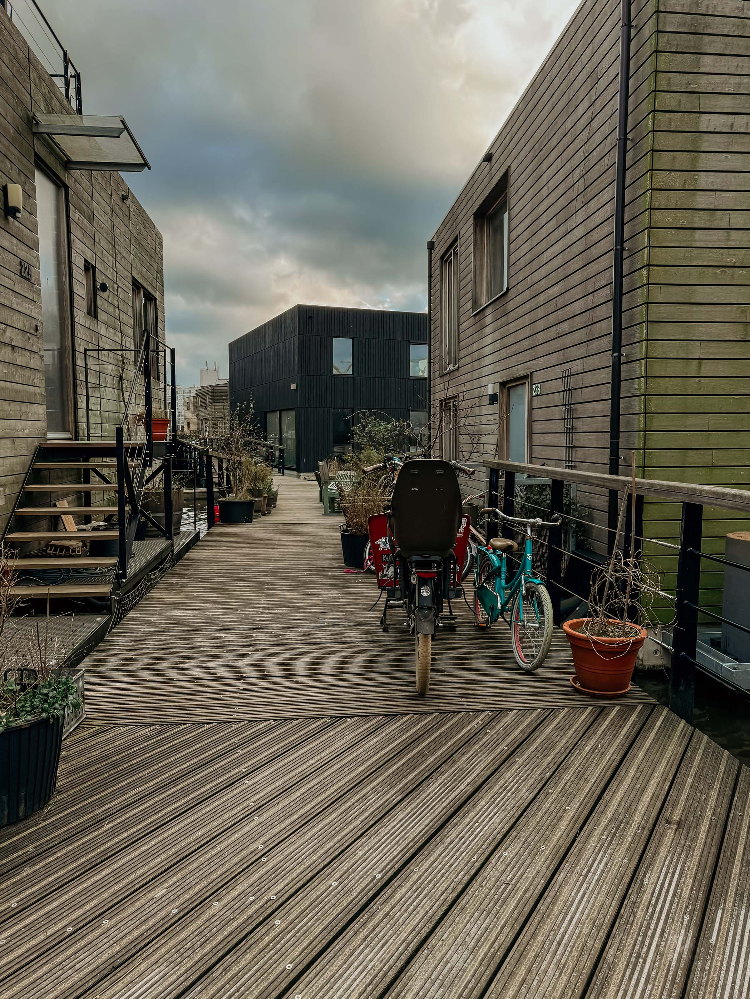
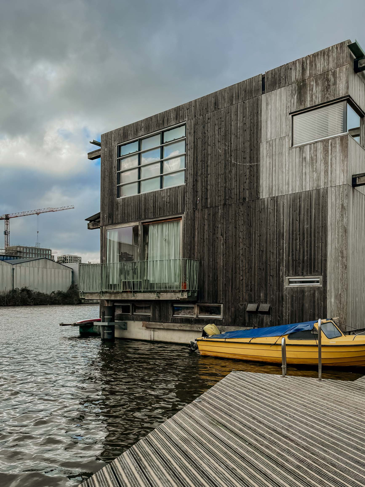
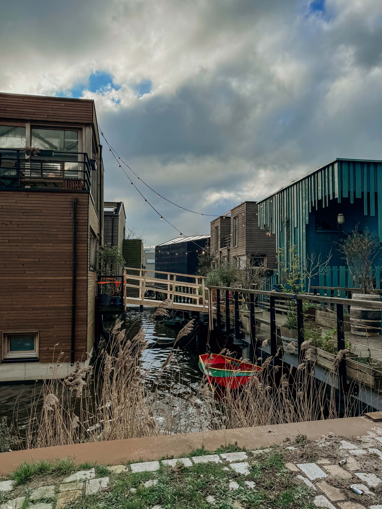
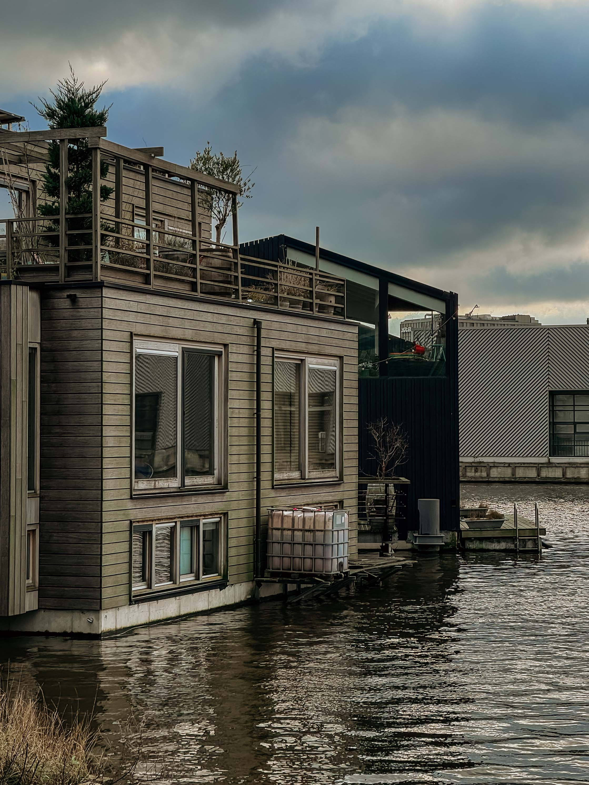
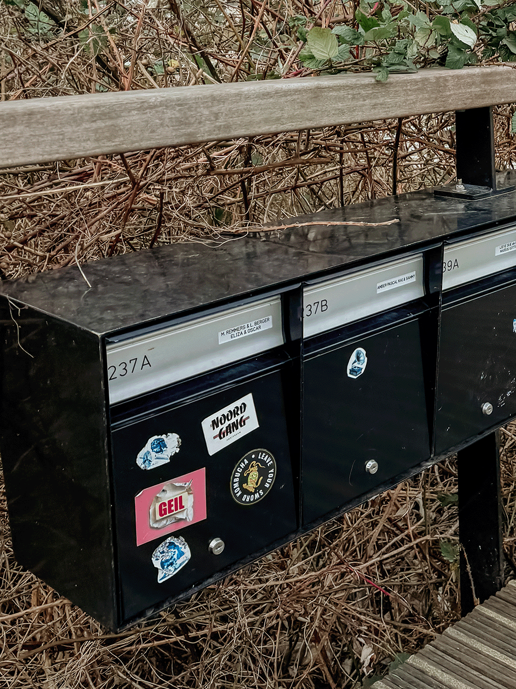

Duurzaamheid
- De waterwoningen op Schoonschip zijn uitstekend geïsoleerd, met een maximale Energieprestatiecoëfficiënt (EPC) van 0.
- Wij verwarmen tapwater met zonneboilers aquathermie, warmtepompen, en passieve zonnewarmte. Daarnaast zijn alle douches uitgerust met een warmteterugwinningssysteem (WTW), waardoor we efficiënt gebruik maken van warmte.
- Voor de verwarming van de waterwoningen maken we gebruik van warmtepompen die warmte onttrekken aan het water van het kanaal, ook wel bekend als aquathermie. Daarnaast streven we ernaar om zoveel mogelijk gebruik te maken van passieve zonnewarmte.
- Op Schoonschip wekken we onze eigen elektriciteit op door middel van fotovoltaïsche zonnepanelen. Elke woning is uitgerust met een ruime accu waarin overschotten aan elektriciteit worden opgeslagen.
- Alle woningen op Schoonschip zijn verbonden met een gezamenlijk smartgrid. Dit slimme netwerk stelt ons in staat om elektriciteit op een efficiënte manier uit te wisselen tussen de huishoudens.
- Op Schoonschip is er een apart systeem voor de afvoer van grijs water & zwart water . In een samenwerkingspilot met Waternet wordt het zwarte water op termijn naar een bioraffinaderij geleid waarin het vergist en omgezet word in energie.
- Bij de bouw van de waterwoningen op Schoonschip is er veel aandacht besteed aan duurzaamheid. Een kenmerkend aspect van alle woningen is het groene dak, dat minimaal 1/3 van het dakoppervlak beslaat.
- Op Schoonschip maken we gebruik van gedeelde elektrische auto's, elektrische bakfietsen en e-bikes.
Sociaal
- Bij Schoonschip is samenleven synoniem aan het bundelen van krachten. We streven naar samenwerking en het inspireren van elkaar en anderen om op een andere, meer duurzame manier te leven. Deze principes vormen de kern van ons gemeenschap.
- Om ervoor te zorgen dat de woningen op Schoonschip betaalbaar blijven, is er gekozen om de helft van de arken te ontwikkelen als twee-onder-één kap. Dit betekent dat er twee huishoudens op één ark wonen, wat een uniek concept is in Nederland.
- We streven ernaar om in contact te komen met de omliggende wijk, zodat we kunnen onderzoeken op welke manier we kunnen bijdragen aan het creëren van een aantrekkelijke leefomgeving.
- Schoonschip is een VvE en heeft de stichting Pioneer Vessel opgericht. Dit hebben wij gedaan om ons gedachte goed uit te kunnen rollen over verschillende thema's.




